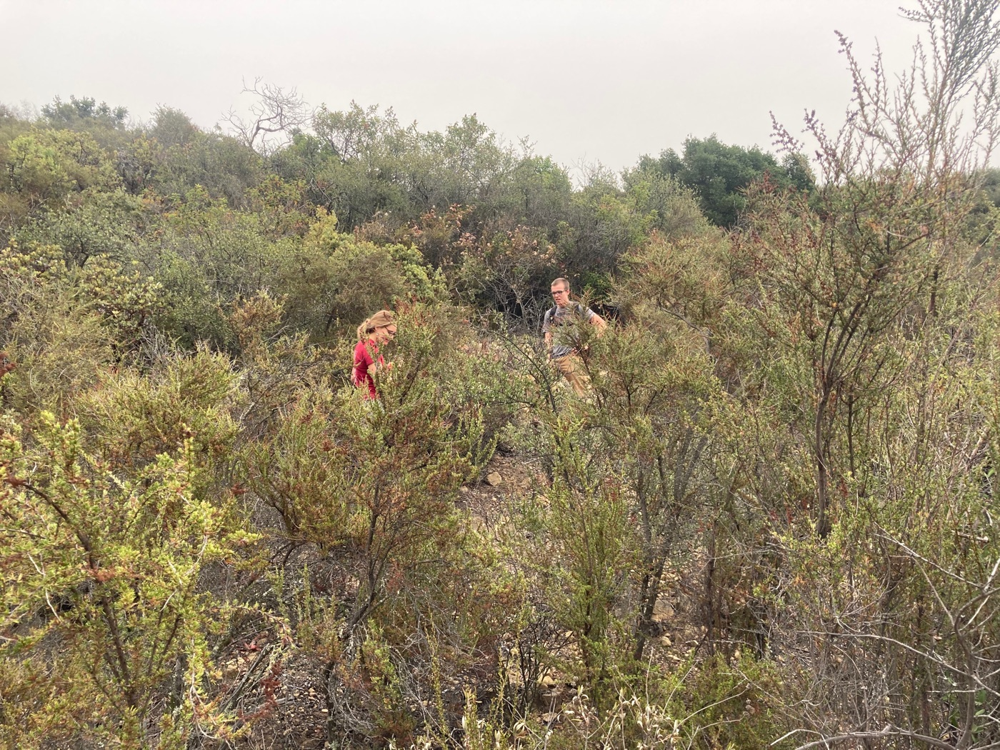

Leaf to landscape flammability
Abstract
In semi-arid regions where drought and wildfire events often co-occur, such as in Southern California chaparral, relationships between plant hydration, drought- and fire-adapted traits may explain landscape-scale wildfire dynamics. To examine these patterns, fire scientists and plant physiologists quantify hydration in plants via mass-based metrics of water content, including live fuel moisture, or pressure-based metrics of physiological status, such as xylem water potential; however, relationships across these metrics, plant traits and flammability remain unresolved.
To determine the impact of hydration on tissue-level flammability (leaves and stems), we conducted laboratory dehydration tests across wet and dry seasons in which we simultaneously measured xylem water potential, live fuel moisture and flammability. We tested two widespread chaparral shrubs, Adenostoma fasciculatum and Ceanothus megacarpus.
Live fuel moisture showed a threshold-type relationship with tissue flammability (increased ignitability and combustibility at specific hydration levels) that aligned with drought-response traits (turgor loss point) and fire behaviour (increased fire likelihood and spread) identified at the landscape scale. Water potential was the better predictor of flammability in linear statistical models. A. fasciculatum was more flammable than C. megacarpus, and both species were more flammable during the wet growing season, suggesting seasonal growth or drought-related tissue characteristics other than moisture content, such as lignin or chemical content, are critical for determining flammability.
Our results suggest a mechanism for landscape-scale increases in flammability at specific levels of drought stress. Integration of drought-related traits, such as the turgor loss point, might improve models of wildfire risk in drought- and fire-prone systems.

Check out the article's feature in Functional Ecology! Functional Ecologists